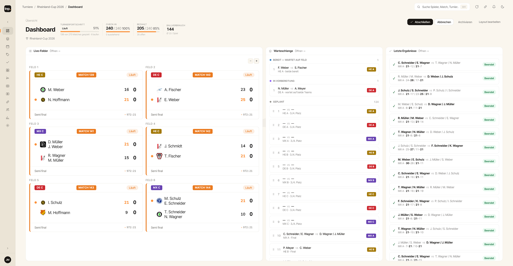
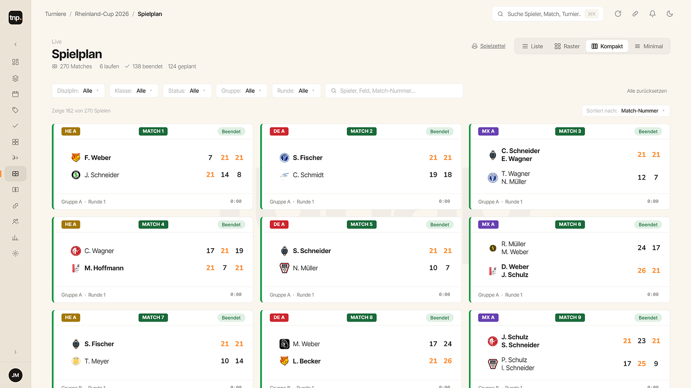
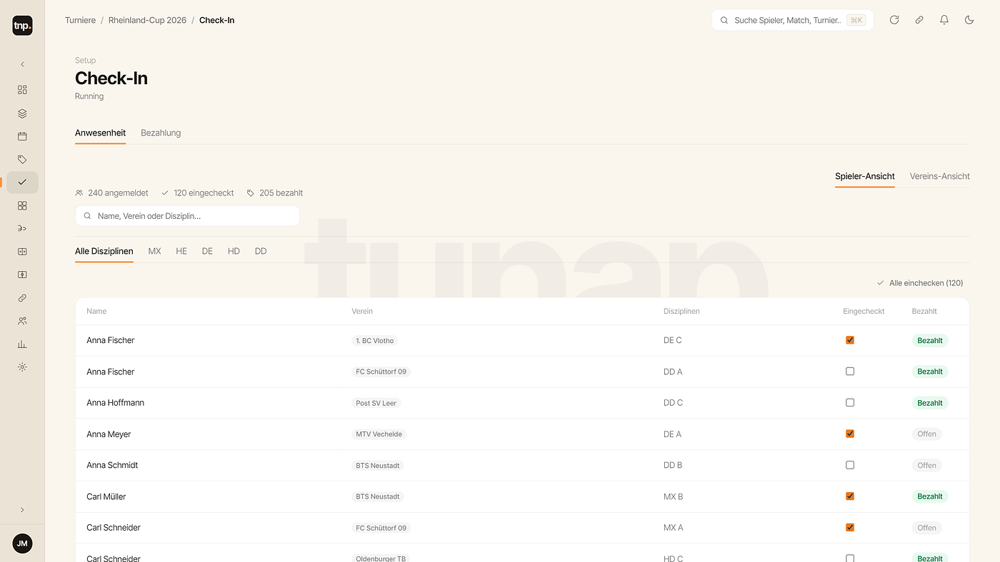
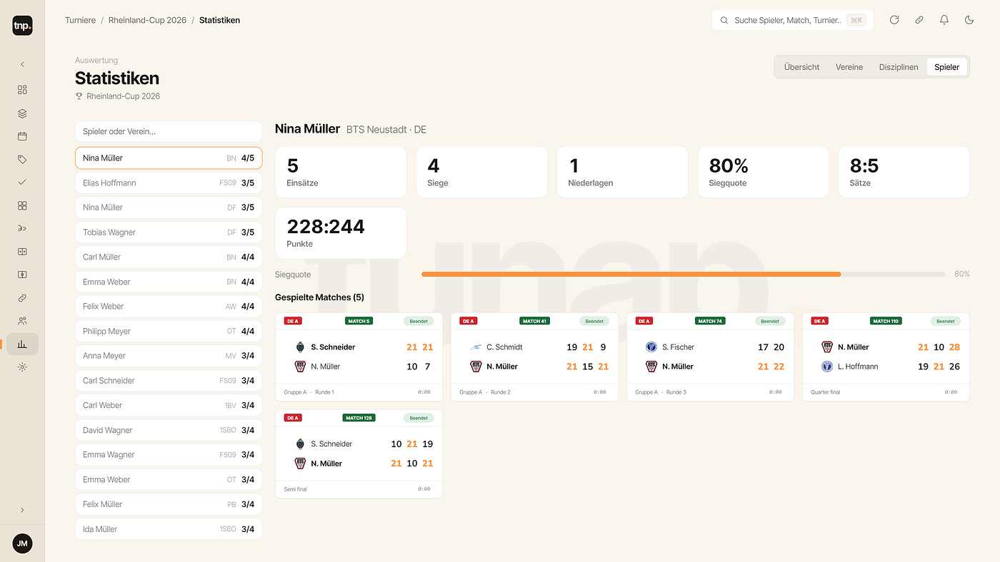

Die Badminton-Turniersoftware, die dein Turnier live anzeigt.The badminton tournament software that shows your tournament live.

Läuft lokal auf einem Windows-Rechner — kein Internet, kein Ausfallrisiko.Runs locally on one Windows PC — no internet, no downtime.
Tablet, Monitor und Public-Ansicht aktualisieren sich sofort.Tablet, monitor and public view update instantly.
Aufschlag, Seitenwechsel und Satzregeln rechnet tunap korrekt mit.Serve, side changes and set rules handled correctly.
Beliebig viele Tablets, Monitore und Zuschauer-Geräte parallel.Any number of tablets, monitors and spectator devices in parallel.



Punktspiel, Turnier, Meisterschaft oder Schweizer System — tunap passt Setzung, Gruppen und Spielplan automatisch an.League match, tournament, championship or Swiss system — tunap adapts seeding, groups and schedule automatically.
Mannschaftsspiel zweier Vereine mit fester Aufstellung und Begegnungen.Team match between two clubs with a fixed line-up of fixtures.
K.-o.-System oder Gruppe + K.o. mit Setzung und automatischer Auslosung.Knockout or group + knockout with seeding and an automatic draw.
Mehrere Disziplinen und Klassen über ein ganzes Event hinweg.Multiple disciplines and classes across one full event.
Jede Runde neue Paarungen nach Punktgleichheit — ohne Ausscheiden.New pairings each round by equal score — without elimination.
So läuft tunap am Spielfeld: Schiedsrichter-Tablet und Court-Monitor, 1:1 aus dem Programm — tippe rechts ein Team an und schau, wie die Hallenanzeige sofort mitspringt.This is tunap courtside: referee tablet and court monitor, 1:1 from the software — tap a team on the right and watch the hall display jump along instantly.
Spieler und Meldungen in Sekunden einlesen.Import players and entries in seconds.
Spielzettel und Ergebnislisten direkt drucken.Print score sheets and result lists directly.
HE, DE, HD, DD und MX — Einzel, Doppel, Mixed.Singles, doubles and mixed across all events.
Vereinslogos und Farben auf Monitor & Anzeigen.Club logos and colours on monitor & displays.
Helle und dunkle Oberfläche für jede Halle.Light and dark UI for any hall.
Lokales Backup — dein Turnier ist jederzeit sicher.Local backup — your tournament is always safe.
tunap-Demo-Version enthält alle Grundfunktionen — nur eben limitiert. Probier sie aus, melde Fehler und sag uns, was fehlt.The free demo version includes every core feature — just limited. Try it out, report bugs and tell us what's missing.
Die eingeschränkte Demo läuft sofort — ohne Anmeldung, ohne Kosten.The limited demo runs instantly — no sign-up, no cost.
Melde Fehler und Ideen — jede Rückmeldung fließt direkt in die Entwicklung ein.Report bugs and ideas — every reply feeds straight into development.
Als Dankeschön bekommst du die Vollversion beim Start günstiger — als Erste·r.As a thank-you you get the full version cheaper at launch — first in line.